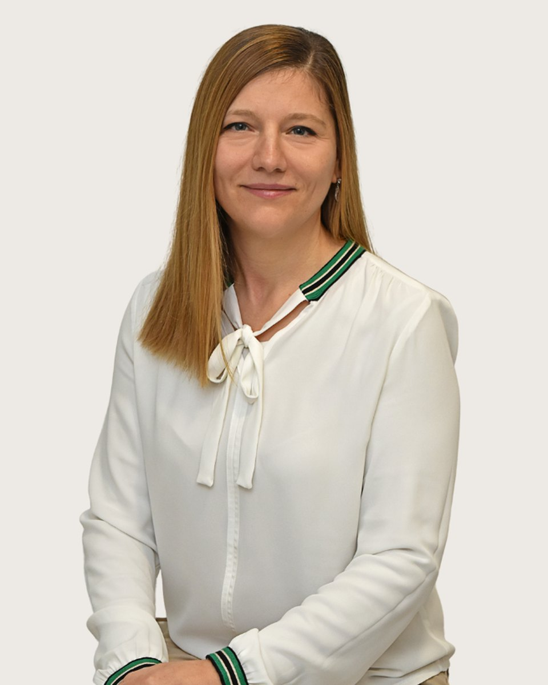

Klinikai szakpszichológus
Szabó
Brigitta
klinikai- és mentálhigiéniai gyermek- és ifjúsági szakpszichológus, illetve pár- és családterapeuta.
Fogadó kolléga: Vajas Zsuzsanna, pszichológus asszisztens. +36 30 961 1364, hétköznap 9-15. Ő segít, ha nem biztos, hogy Szabó Brigitta a megfelelő választás.
Szabó Brigitta vagyok, pszichológus, klinikai- és mentálhigiéniai gyermek- és ifjúsági szakpszichológus, pár-, családterapeuta illetve analitikusan orientált gyermekterapeuta jelölt. Szakmai munkám mellett folyamatosan képzem magam, hogy minél szélesebbkörű szakmai tudást elsajátítva holisztikus módon, a különböző pszichoterápiás módszereket integratívan alkalmazva a lehető leghatékonyabb segítséget nyújthassam a hozzám forduló kliensek számára.
Amiben segítek
Szabó Brigitta saját megfogalmazásában
Önértékelési nehézségek
Stresszkezelés
Szorongásos panaszok, pánik
Serdülőkori krízis
Gyász
Párkapcsolati, családi nehézségek
Evészavarok
Alvászavarok
Hangulati problémák
Önsértés
Pszichoszomatikus panaszok
Indulatkezelési nehézségek
Gyermeknevelési tanácsadás
Szülő-gyermek kapcsolati nehézségek
Képzés és szakmai út
A képzések és a szupervízió az akkreditált szakképzőhely rendjében folynak. Mit jelent ez Önnek
Szakirányú megszerzett végzettségek
Tanulmányok
Hiszek az élethosszig tartó tanulás jelentőségében. Ehhez híven folyamatosan képezem magam szakterületemen belül. Jelenleg a korai prevenció irányában folytatok szakirányú továbbképzést. E terület képviseletét a jövőben is szívügyemnek tekintem, mivel hiszek a minél korábbi életkorban történő megsegítés kifejezett fontosságában, preventív értékében.
Szakmai tapasztalatok
Tanítómesterek
Akiknél a módszereket tanulta
- Prof. Dr. Bagdy Emőke: professzor emerita egyetemi tanár klinikai szakpszichológus, pszichoterapeuta
- dr. Bugán Antal: klinikai szakpszichológus
- Halász Anna: klinikai szakpszichológus, pszichoterapeuta
- Dr. Komlósi Piroska: klinikai szakpszichológus, pszichoterapeuta, kiképző családterapeuta
- Dr. Moretti Magdolna: pszichiáter, pszichoterapeuta, kiképző családterapeuta
- Sarkadi Borbála: Klinikai szakpszichológus, kiképző gyermekpszichoterapeuta
- Szilágyi Nóra: Klinikai szakpszichológus, pszichoterapeuta
Rólam mondták
Kliensek visszajelzései, a hozzájárulásukkal
Mi nagyon sokat köszönhetünk Brigitta kedves, türelmes, de határozott személyiségének, mert meg tudott felé nyílni a gyermekem, akit így tudott terelgetni az önmaga megismerésének útján - a gyógyulás felé
Nagyon örülünk, hogy a férjemmel megismerhettük Brigittát. Régóta segítségünkre van, nem adja fel és végtelenül türelmes. Sokat tanulunk tőle. Példaértékű a munkája.
Ha inkább mást keresne
Három kolléga hasonló területekkel. A teljes regiszterben 37 szakember szűrhető.
Következő lépés
Időpont Szabó Brigittanál
Írjon nekünk, vagy hívja ügyfélszolgálatunkat hétköznap 9 és 15 óra között. Az első alkalom 50 perc, díja 18-25 ezer forint alkalmanként. Ha Szabó Brigitta naptára tele van, megmondjuk, ki tud hasonló területen fogadni.